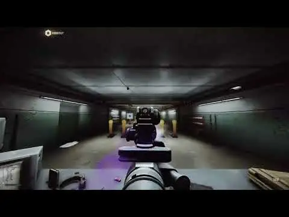

Resound
- Downloads
- 168
- Favourites
- 0
Swaps THE CITY’s weapon fire sounds for sounds from other games. Right now that’s mostly Black Ops 2, plus the CS2 Deagle.
This started because I wanted the BO2 DSR-50 sound on my TRG M10 and then got carried away.

33 weapons:
- AK-74N (BO2 AN-94)
- M4A1 (M8A1)
- SCAR-H, all 3 variants (BO2 SCAR-H, plus suppressed)
- HK 416A5 (M27 IAR, plus suppressed)
- MP7A1 / MP7A2 (MP7)
- KRISS Vector, both calibers (Vector K10)
- FN P90 (PDW-57)
- MP5 / MP5K (MSMC, including suppressed)
- SKS / OP-SKS (SVU-AS)
- Sako TRG M10 (DSR-50)
- Five-seven, both variants (plus suppressed)
- Beretta M9A3 (B23R)
- Desert Eagle, all 5 (CS2)
- Shotguns: MP-133, M870, MP-18, both MP-43s (R-870 MCS), and MP-153, MP-155, Saiga-12K, Saiga-12K FA (M1216, plus a suppressed Saiga)
Everything else keeps its normal THE CITY sound.
Both the shot and the distant tail are replaced, so it doesn’t sound like a BO2 gun with a THE CITY echo bolted on. Bots and other players get the same sounds you do, and it works in Fika.
I’ll add more over time. If you’ve got an idea, let me know and I’ll do it if I can rip the sound.
Resound loads add-on packs, so anyone can put sounds from any game on any weapon and ship it
Using one: drop the folder in BepInEx/plugins/Resound/, next to my sounds folder. That’s the whole install. Nothing to register, no load order. Resound picks it up on startup and says what it loaded in the log. Put it anywhere else and it won’t load, though the log will tell you that too.
Run as many as you like. They only clash if two of them want the same gun, and even then it’s per weapon, so you’ll hear all of them on the guns each one wins. If you’d rather just hear one, there’s an Active sound pack setting that ignores the rest. Making one: a pack is a manifest file and some wavs.
BepInEx/plugins/Resound/MyPack/
resound.pack.json
sounds/myscar/body/whatever.wav
Point an entry at one exact weapon, a list of them, a whole weapon class, a caliber, or a pattern on the weapon’s internal name. "weapClass": "pistol" covers every pistol in the game in one line. Anything you don’t provide keeps its normal THE CITY sound, so a pack can be one gunshot or a full conversion.
Packs can replace the shot, the distant tail, the suppressed version of both, and reload and handling sounds. Each entry sets its own volumes, and 1.0 means exactly what THE CITY uses, so a pack stays balanced against the rest of the game.
If two packs want the same gun the higher priority wins, then the more specific entry, then alphabetically by pack id. Sounds I ship sit below every installed pack on purpose, so a pack always beats them and weapons I add later can never take a gun back off one. The winner goes in the log with the numbers it won on, so conflicts are visible instead of mysterious.
information There’s a full guide with a working example manifest in the example-pack folder on the github https://github.com/diemitze/resound/tree/main/example-pack. It covers the stuff that will otherwise catch you out: wav only and mono only, how to set tail volumes so they don’t crack when someone fits a suppressor, how full auto gets built out of your single sample, and the log lines that tell you whether it loaded.
- Start the SPT server and leave it running.
- Open a browser and go to http://127.0.0.1:6969/resound
- That’s it.
The server window has to be open, it’s the thing serving the page. If you changed the port in SPT_Data/configs/http.json, use that number instead of 6969.
What’s on it:
- Every weapon in the game, and what each one currently sounds like.
- A pack picker, so you don’t have to think about priority numbers.
- Pin a single weapon to a single pack. Want pack A’s shotgun but pack B for everything else? Click it. A pin always wins.
Pick something, it saves, restart the game and you’ll hear it. In Fika everyone gets the host’s choices, as long as they have the pack installed too.
Don’t want it? Delete user/mods/Resound.Server. Nothing breaks, you just pick packs in the BepInEx config instead.
BepInEx config, com.20fpsguy.resound:
- Enable sound replacement - turn it off to go back to stock sounds without uninstalling. Takes effect on the next shot, no restart.
- Debug logging - leave it off unless something’s broken and I ask for a log.
- Log sound event names - for pack authors, prints a weapon’s reload and handling event names.
- Log weapon template ids - for pack authors, prints the id of whatever you just fired.
If a gun sounds too loud or too quiet you can change it yourself in BepInEx/plugins/Resound/sounds/mapping.json. Restart the game after editing. 1.0 is stock THE CITY loudness, so 0.8 is a bit quieter, 1.2 a bit louder.
| Setting | What it scales |
|---|---|
bodyVolume |
the shot itself |
tailVolume |
the distant tail after it |
bodySilencedVolume |
the shot, with a suppressor fitted |
tailSilencedVolume |
the tail, with a suppressor fitted |
eventVolume |
reload and handling sounds |
decayBeats |
full auto only, default 4. How long each shot rings before the next one in the loop |
Leave the silenced ones out and they follow the unsuppressed settings. Set decayBeats too high and full auto turns to mush.
- The sounds I ship are fire sounds. Reload and handling audio can be replaced too and packs can do it, but I haven’t done that pass on the BO2 set yet.
- Full auto is handled properly. THE CITY wants a 16 shot firing loop rather than a single shot, so the mod builds one at the weapon’s real fire rate.
- Suppressors are supported on the weapons listed with a suppressed version. The rest keep their normal sound with a can fitted.
The files are all plain wavs in plain folders and the mapping is readable, so if you want to add your own sounds or move sounds onto different guns, you can probably work it out. There’s a guide in the download now if you want to do it properly as a pack.
Sounds are from Black Ops 2 (Treyarch / Activision) and CS2 (Valve). All rights theirs. I didn’t make any of the audio, I just pointed THE CITY at it.
Version
1.1.0
Added
- Sound packs. anyone can add sounds for any weapon by dropping a folder in
BepInEx/plugins/Resound/containing aresound.pack.jsonand some WAVs. Packs are found by manifest name at startup, up to three folders deep under that one root: startup never walks the whole plugins tree, and a pack landing anywhere else is named in the log rather than going quietly missing. - Log weapon template ids config toggle, replacing the
logWeaponIdskey inmapping.json. Pack authors need it to target one exact weapon. - Reload and foley sounds. Sets can now replace mag in/out, bolt, slide, pump, shell
and draw/holster audio, not just the shot. Drop clips in
<set>/events/<EventName>/, named after Big Silly Goose’s own animator event (SndMagOut,SndBoltIn,SndSlideOut). Anything without a folder stays vanilla, so a set can cover one event or thirty. - Six more weapons, all exact 1:1 matches where BO2 and THE CITY ship the same real gun: HK 416A5 (BO2 M27 IAR, which is an HK416, and it brings a suppressed sample too), FN P90 (PDW-57), KRISS Vector both calibers (Vector K10) and MP7A1 / MP7A2 (MP7). 33 weapons total.
- FN SCAR-H, BO2 SCAR-H. Covers the Mk 17, Mk 17 FDE and the X Products X-17 SCAR 17. Suppressed uses BO2’s M27 take, because BO2 never shipped a suppressed SCAR sample; only six of its guns have one. The two 5.56 Mk 16s are mapped but left disabled, since a 7.62 sound on them is too heavy.
- Log sound event names config toggle. Prints a weapon’s full event table when it is drawn and each event the first time it fires. These names live on the weapon prefabs rather than in the game assembly, so this is the only way to read them.
eventVolume,bodySilencedVolumeandtailSilencedVolumeinmapping.json. The silenced pair are optional and inherit from their unsuppressed counterparts when absent.decayBeatsinmapping.json, default 4. Sets how much of each shot survives in the full-auto loop. A sample longer than the window is cut short with a linear fade, which is what pulls full-auto away from the source game: at 600 RPM the window is 0.4s, so a 0.86s suppressed sample loses more than half its ring. Raising it keeps more of the sample at the cost of overlapping more copies.
Changed
- Tail volumes rebalanced per source. BO2 does not mix its weapon classes to each
other: the pistol distance takes average about -35 dB where the assault, rifle and
shotgun ones sit near -25 dB. One shared
tailVolumeof 0.8 left everything except the pistols roughly 10 dB hot. Now set per source, 0.23 to 0.28 for the loud classes and 0.8 kept for the pistols. tail_silenced/falls back to vanilla, not to the unsuppressed tail. Source tails are mixed for an unsuppressed shot, so inheriting one put a full-volume distance crack after a quiet suppressed body and the gun sounded like it was firing from a few hundred metres away.body_silenced/anddoublet_silenced/still inherit, since fitting a suppressor should not flip the gun back to its vanilla sound.- Weapon and event lookup now happens when a weapon is drawn rather than on its first shot. Reload events fire before you ever pull the trigger, so resolving on fire was too late for them, and it also removes the first-shot delay while clips load from disk.
Fixed
- Volume settings did nothing for any slot a set did not replace. The vanilla bank was kept
at full
BaseVolumebeside clips that had been turned down. Kept banks are now rescaled too, which is what makestailSilencedVolumework at all when a set ships notail_silenced/folder. - Fitting or removing a suppressor without switching weapons left
_firingLoopLengthcomputed from the other body bank. That value gates when the audio source is released, so the sound stopped on the wrong schedule.
Known issues
- A replaced bank uses the same clips for every environment and distance layer, where vanilla
has separate ones. Indoors that can read as a slight crack on the shot, most audible on
full auto with a raised
decayBeats, since more overlapping copies means the loop is already normalised close to full scale before the indoor mix touches it.
Version
1.0.0
Release!